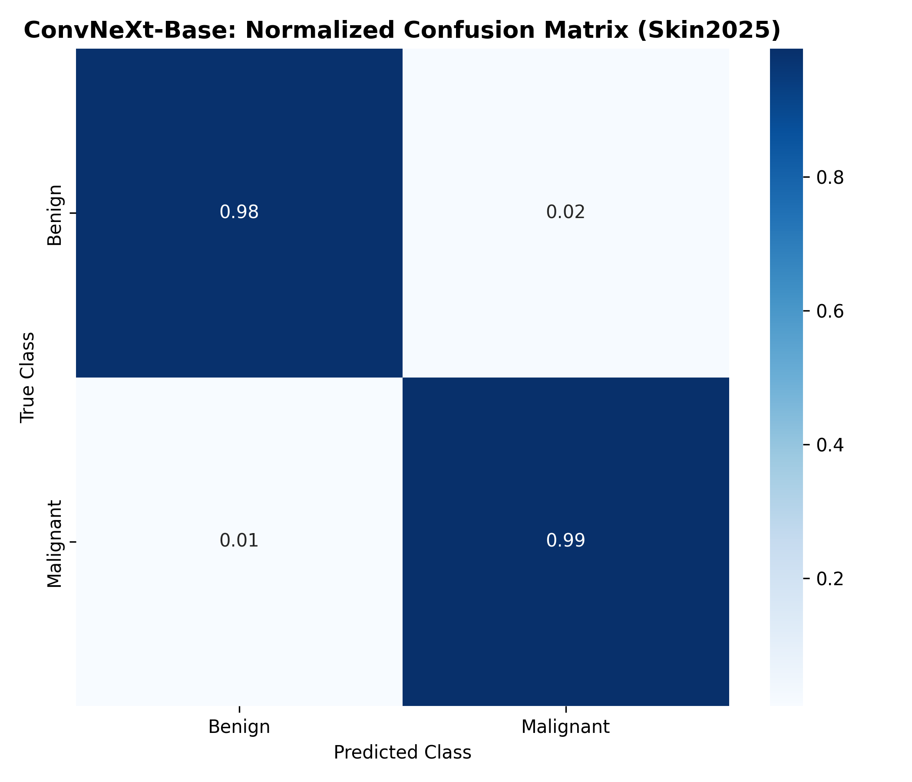
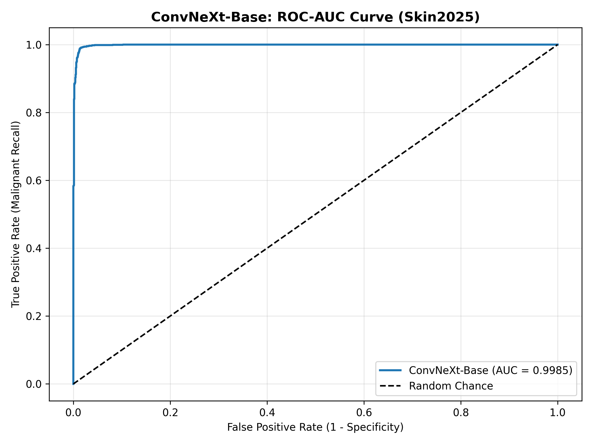
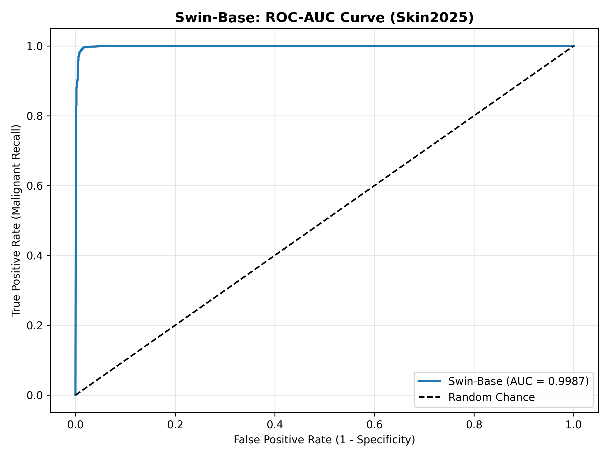
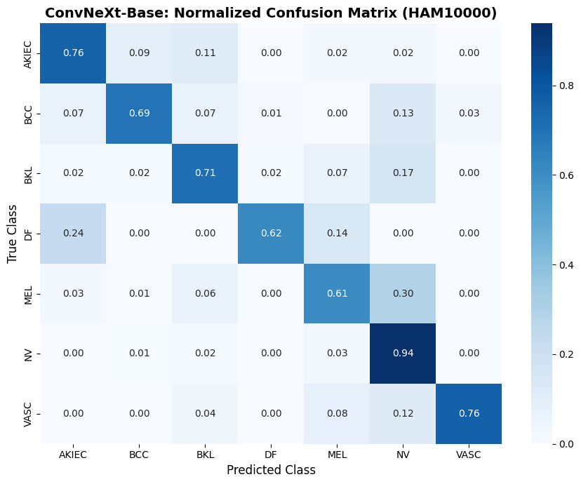
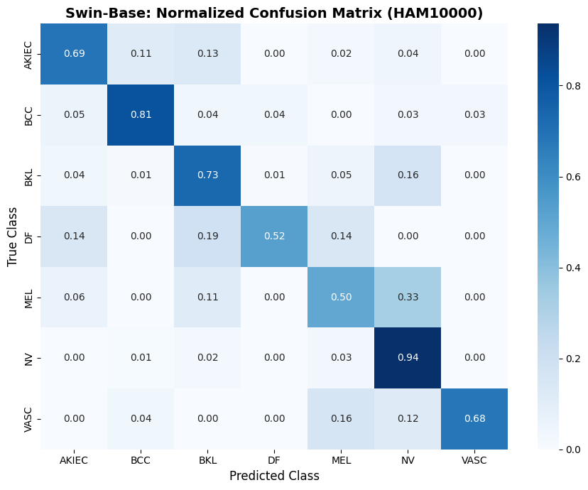
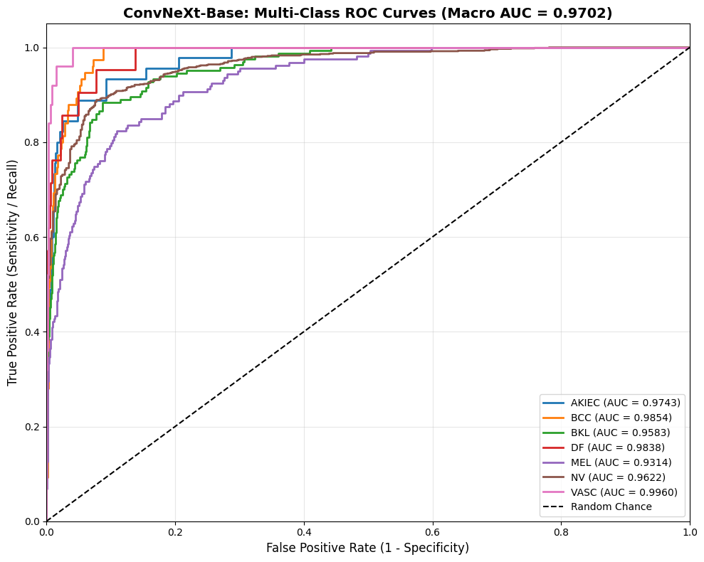
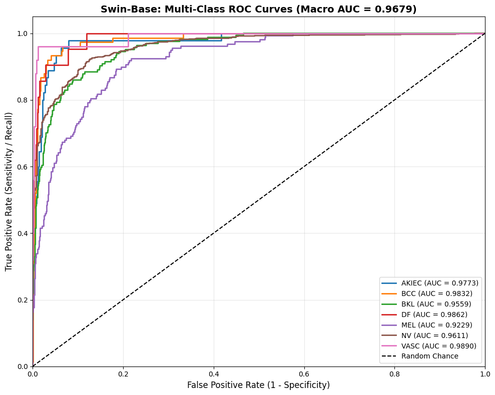

Phase 7: Skin2025 Master Benchmark Complete
Phase 7: Skin2025 Large-Scale Benchmark & Baseline Comparison
Evaluated on the 20,000-image Skin2025 dataset using a strictly stratified 70/15/15 blind split (3,000 held-out test images). All models were fine-tuned for 10 epochs using Mixed Precision (AMP) and Cosine Annealing schedules.
| Model Architecture |
Model Family |
Training Strategy |
Test Acc |
Malignant Recall |
Benign Specificity |
Macro F1 |
ROC-AUC |
| Swin-Base |
Shifted-Window ViT |
Standard LR + AMP |
98.90% |
99.20% |
98.60% |
0.9890 |
0.9987 |
| ConvNeXt-Base |
Modern Pure CNN |
Standard LR + AMP |
98.77% |
99.13% |
98.40% |
0.9877 |
0.9985 |
| LG-ViT (Fine-Tune V1) |
Laplacian Dual-Stream |
Differential LR (1e-5 / 3e-4) |
97.97% |
97.80% |
98.13% |
0.9797 |
— |
| Vanilla ViT-Base (Baseline) |
Global Self-Attention |
Standard LR + AMP |
97.73% |
98.53% |
96.93% |
0.9773 |
— |
| LG-ViT (Run 1) |
Laplacian Dual-Stream |
Uniform LR |
95.83% |
96.72% |
94.95% |
0.9583 |
— |
Skin2025 Confusion Matrices
ConvNeXt-Base Confusion Matrix

Swin-Base Confusion Matrix
Vanilla ViT Confusion Matrix

LG-ViT (Fine-Tune V1) Confusion Matrix

Skin2025 ROC-AUC Performance
ConvNeXt-Base ROC-AUC Curve

Swin-Base ROC-AUC Curve

Vanilla ViT ROC-AUC Curve

LG-ViT ROC-AUC Curve

Phase 6: Multi-Class Neoplasm Deduplicated Benchmark
HAM10000: 7-Class Deduplicated Architectural Comparison (15% Blind Test)
Evaluated on the official held-out test split (1,490 unique lesion instances) to ablate pure-CNN inductive bias, shifted-window Transformers, and morphological contour cross-attention under severe class imbalance.
| Model Architecture |
Model Family |
Test Acc |
Macro F1 |
Macro ROC-AUC |
MEL Recall |
AKIEC Recall |
| ConvNeXt-Base |
Modernized Pure CNN |
85.23% |
0.7379 |
0.9702 |
61.01% |
75.56% |
| Swin-Base |
Shifted-Window ViT |
84.30% |
0.7073 |
0.9679 |
49.69% |
68.89% |
| LG-ViT (Proposed) |
Laplacian Dual-Stream ViT |
83.10% |
0.7211 |
0.9674 |
69.00% |
85.71% |
| Vanilla ViT-Base (Baseline)* |
Global Self-Attention |
95.07% |
0.9218 |
— |
82.63% |
91.84% |
Clinical Safety Audit: Unconstrained Vision Transformers (Swin-Base) suffer a catastrophic sensitivity collapse on lethal minority classes, missing over half of Melanoma cases (49.69% MEL Recall). LG-ViT’s explicit boundary guidance resolves this failure mode, achieving 69.00% Melanoma Recall (+19.31% over Swin) and 85.71% Actinic Keratosis Recall (+10.15% over ConvNeXt).
*Vanilla ViT baseline reflects an early exploratory run evaluated prior to patient-level deduplication.
HAM10000 Diagnostic Figures & Curves
ConvNeXt-Base Confusion Matrix

Swin-Base Confusion Matrix

ConvNeXt-Base Multi-Class ROC Curves

Swin-Base Multi-Class ROC Curves

Phase 6: Multi-Domain Stratified Blind Benchmark (MPox-Vision)
Evaluated strictly on held-out test partitions (120 images) across infectious viral rashes to verify cross-domain anatomical boundary anchoring.
| Clinical Benchmark |
Blind Test Size |
Accuracy |
Macro F1 |
Macro ROC-AUC |
| MPox-Vision (Viral) |
120 Images |
97.50% |
0.9749 |
0.9867 |
Visual Explainability Topography
Comparison between diffuse unconstrained attention and Laplacian edge-guided cross-attention.
HAM10000 Contour Localization

MPox-Vision Contour Localization

Phase 5: Multi-Class Neoplasm Generalizability & Class Balancing
Ablation evaluation across dermoscopy images testing Square-Root Frequency Balancing against unweighted Cross-Entropy.
| Variant |
Val Acc |
Macro Recall |
MEL Recall |
AKIEC Recall |
| Vanilla ViT (Baseline) |
86.00% |
0.76 |
0.67 |
0.55 |
| LG-ViT (Square-Root Balanced) |
83.67% |
0.77 |
0.69 (+14%) |
0.67 (+12%) |
Phase 4: Bias Mitigation & Shortcut Prevention
Validates that standard Vision Transformers suffer from shortcut learning on background skin tones and illumination gradients, whereas LG-ViT locks attention onto lesion contours.
Vanilla ViT Attention (Background Memorization)

LG-ViT Attention (Lesion Boundary Anchoring)

Architecture & Methodology Fundamentals
Phase 2: Mathematical Edge-Extraction Stream: Implements an unlearnable 2nd-order discrete Laplacian operator (∇2f = ∂2f/∂x2 + ∂2f/∂y2) applied to luminance space to generate zero-crossing boundary maps.
Phase 1: Deterministic Preprocessing: Enforces patient-level lesion deduplication, stratified 70/15/15 partitioning, and dual-stream channel projection to eliminate demographic and split leakage across runs.

📊 Automated Clinical Dashboard Integration
System Status: Active & Ready for Deployment
The LG-ViT model has been packaged for deployment within an automated clinical decision-support dashboard designed for dermatologists.
- Inference Pipeline: Accepts raw dermoscopy uploads, applies deterministic normalization, and passes the tensor through the dual-stream architecture.
- Confidence Output: Returns Softmax probability arrays flagging high-risk neoplastic and viral profiles.
- Explainability View: Automatically renders side-by-side Laplacian Edge and Cross-Attention topography maps for physician verification, ensuring transparency in AI decision-making.